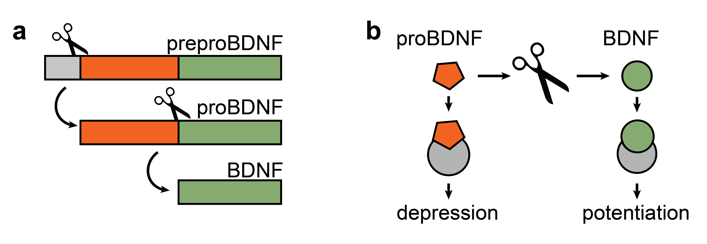

The Emperor’s New
Ǫ̵͎͊G̶̦̉̇l̶͉͇̝̽͆̚i̷͔̓̏͌c̷̱̙̍̂͜k̷̠͍͌l̷̢̍͗̃n̷̖͇̏̆å̴̤c̵̲̼̫͑̎̆
(Ǫ̵͎͊G̶̦̉̇l̶͉͇̝̽͆̚i̷͔̓̏͌c̷̱̙̍̂͜k̷̠͍͌l̷̢̍͗̃n̷̖͇̏̆å̴̤c̵̲̼̫͑̎̆ is an intentionallygarbled version
of the word O-GlcNAc. The reasons for garbling it will hopefully
become clear while reading this essay!)
Flashback : It’s June 7th, 2017. The transformer
architecture will drop on
the arxiv in 5 days, Hugh Hefner will die in less than 3
months[1], and the computational neuroscience community
is having a field day on Twitter. It started with this tweet from Michael Nitabach
from Yale School of Medicine complaining about opaque jargon in
theoretical papers:
[1]
Should we tell him? He’ll probably find a way to make good use of
his remaining time.
There was a bit of goofy back and forth about the (un)importance
of mathematical vocabulary in neuroscience, some attempts at
explaining the term, and eventually the call for a workshop on
“Manifold-splaining”, which happened half a year
later[2].
[2]
At the Cosyne 2018 workshop
with the title “Manifold-splaining: What the theorist said to the
experimentalist”.
There are some things to be said here about how we use
terminology[3] or what manifolds actually
are[4], but I’m bringing this up because I
distinctly[5] remember an offhand comment that someone
made at that workshop. The comment was that it’s unfair that
experimentalists get to write things like “O-GlcNAc
signaling entrains the circadian clock by inhibiting BMAL1/CLOCK
ubiquitination,” and nobody gives them hell for writing
their papers in Klingon. Or at least they
are not gettingenough hell for it.
[3]
I want to write a full post on that at some point, but for now,
this
and this
is great.
[4]
The answer may surprise you. Hint: The average
neuroscientist does not know what “a topological space with
the property that each point has a neighborhood that is homeomorphic
to an open subset of n-dimensional Euclidean space” is.
[5]
i.e. 75% chance this actually happened
When I was first confronted with the alphabet
soup that calls itself molecular neuroscience, I was
awed by my colleagues, who appeared to be fluent in
speaking p̴͓̂͘á̴̻͌s̶̻̗͋͑ṯ̸̹̈́̌à̶̳. It took me a year or two to figure out that they
also do not know what most of the terms mean - and for most
abbreviations, there are only a handful of people in the world who
can decode them. But nobody likes to acknowledge
that they don’t know what things mean publicly. Therefore
everybody nods along when they read Ǫ̵͎͊G̶̦̉̇l̶͉͇̝̽͆̚i̷͔̓̏͌c̷̱̙̍̂͜k̷̠͍͌l̷̢̍͗̃n̷̖͇̏̆å̴̤c̵̲̼̫͑̎̆. So it’s fine if you
don’t know what it means. Almost nobody does[6].
[6]
A colleague of mine points out that she reads this as: “[pathway
I don’t work on] is affected by [protein I don’t work on]”. I guess
that’s fine, and perhaps it even represents some optimal trade-off
between conciseness and information content for some people. I’m
just pointing out that most people don’t know that there is no
secret society of “initiated people” who can read all those titles
and know what they mean.
Let’s talk about
BDNF.
Perhaps you are the kind of person that takes the preceding
paragraphs as a challenge, and you’d like to learn to speak p̴͓̂͘á̴̻͌s̶̻̗͋͑ṯ̸̹̈́̌à̶̳
yourself. Or perhaps you like to read about different levels of
abstraction, what we gain by using them, and how we can transition
between them. Or perhaps you’re having a slow day and want to learn
something funky. In all those cases, this essay is certainly for
you.
But perhaps you are a very busy person, and you tend to be very
selective about how you spend your time. Perhaps you want to be sure
that if you’re going to dive into this mess of molecules,
you’ll be able to get a Pareto-sized
chunk of insight in return. Perhaps you’ve
been hurt before and have difficulties trusting any
molecule. In all those cases, this section is here to assuage you.
Let me motivate why you might care about the protagonist of this
essay, the “brain-derived neurotrophic factor”
(BDNF[7]).
[7]
Or, as I like to call it, bedumpf.
Argument from interestingness.
BDNF has shown up repeatedly in the rationality-sphere over the
last years:
Natália Mendonça’s counter-thesis that you shouldsleep
all the time attacks Guzey’s claims about BDNF.
Scott Alexander explained
a few years ago how an increase in BDNF plays a central role in
the function of antidepressants.
Then there was a big
Cell paper that argued for the importance of the canonical BDNF
receptor (TrkB) rather than BDNF. Scott didn’t
buy it.
But that is just the tip of the iceberg! Let’s check out what we
can find on Spotify about BDNF.
Faster learning, better memory, neurogenesis, stopping
Alzheimer’s. Also, some playlists that will boost your BDNF!
What about YouTube?
More boosting brainpower, fighting anxiety, naturally increasing
BDNF through workout…
Hopefully, all of your alarm
bells are going off right now. This pattern-matches with scams
and irreplicability.
Cognitive enhancement would be a huge deal, but it’s also
super difficult,
and apart from maybe coffee and modafinil, there don’t appear to be
any easy hacks.
But why do (some) people believe BDNF can do all these
things? There are so many words in p̴͓̂͘á̴̻͌s̶̻̗͋͑ṯ̸̹̈́̌à̶̳; why pick BDNF in
particular? Why are there no playlists about Ǫ̵͎͊G̶̦̉̇l̶͉͇̝̽͆̚i̷͔̓̏͌c̷̱̙̍̂͜k̷̠͍͌l̷̢̍͗̃n̷̖͇̏̆å̴̤c̵̲̼̫͑̎̆ improving
your mental faculties?
Argument from academic street cred.
A partial answer to that question comes directly when we open
Google Scholar and search for BDNF.
A
semi-random selection of BDNF papers from the first page of Google
Scholar.
If you happen to be doing neuroscience research in the 90s and
you are looking for a hot topic to research - BDNF is your
fast-track ticket to tenure[8]. Considering that the
“normal” citation count for a paper in a top journal like Nature is
“only”
in the double digits, and a lot of papers never
get cited at all, it is pretty insane that you have to go to
page 14 on Google Scholar after searching”BDNF” to find a
paper with less than 100 citations[9].
[8]
Also, consider telling Hugh Hefner about his death date. He’ll
probably find a way to make good use of his remaining time.
[9]
And
this one was published only last… wait.. oh no. When did that
happen?
Other signaling molecules pale in comparison:
glutamate; first sub-100 citations paper on page 9
The fact that there is so much research on BDNF also hints at why
there should be so much questionable content on Spotify and YouTube.
We should expect the noise
to scale with the signal - the more research there is, the
easier it is to pick out individual pieces and spin an arbitrary
narrative. But this should not a priori mean that the
underlying science is bad! Quantum
healing does not invalidate quantum physics.
So let us zoom out instead and (try to) take an unbiased look.
From a previous
project, I happen to have a 2D embedding of all the neuroscience
papers published on biorxiv:
Zoom
in on the neuroscience section of biorxiv (red) from a tSNE
embedding of all papers on biorxiv. Superimposed are the projected
embeddings of three famous neuroscientists and yours truly.
This embedding is useful for understanding where/in which
subcommunity certain topics are being researched. In
particular, for any given keyword, we can compute the semantic
similarity with all the papers:
We can use the resulting similarity scores to color in a tSNE
embedding of all the neuroscience papers.
TSNE
embedding of all preprints published in the neuroscience section of
biorxiv. Embedding computed with the Allen SPECTER model.
The color indicates semantic similarity with serotonin (left),
glutamate (middle), or BDNF (right).
BDNF makes the neuroscience landscape light
up like a Christmas tree[10]! Almost all areas of
neuroscience that are represented on biorxiv appear to have active
research related to BDNF. Postulating that all the subfields of
neuroscience conspire to do shoddy science on BDNF is probably a bit
much.
[10]
I didn’t expect to see such a strong difference (glutamate and
serotonin are also kind of important), so perhaps there is some bias
in how the SPECTER model computes the embedding of the string
“Brain-derived neurotrophic factor (BDNF)”. (Also, this is totally
not how the SPECTER model is supposed to be used.) Or perhaps it’s
because BDNF is comparatively “new”, i.e. only discovered 40 years
ago?
So I conclude that there is some true signal in all the
noise. That’s rather fortunate[11] for me since it means
that the time I already spent working
on this is not (completely) wasted. Let’s see if we can unpack
this further and separate the fluff from the science.
[11]
or overly convenient?
Exposition
It’s 1982[12], and you are a
Swiss-born neurobiologist[13] who finds himself as the
director of the Max-Planck Institute for Psychiatry[14]
established only 5 years earlier. During your childhood in the Swiss
mountainside, you would not have expected to find yourself in a
laboratory, cooled down to 4°, containing several refrigerators
filled with pig brains and a blender; but here you are. Together
with your
colleague, you are looking at a dark stripe localized in a
single spot of the gel you just electrophorized. You can’t quite
hide your satisfaction that the procedure worked. Indeed, it seems
there is a growth factor in the central nervous system that
nobody has seen before.
[12]
Hugh Hefner will have a minor stroke in three years and reevaluate
his lifestyle. Perhaps we should stop this time-traveling
thing.
[13]
You can find an autobiography of Hans Thoenen focused on his
scientific work here.
[14]
Soon rebranded as the “Max-Planck Institute of Neurobiology” in
1998.
Yves-Alain Barde and Hans Thoenen had searched for BDNF by
purifying it from pig brains. It’s present in very low quantities,
so it took them a while to find it. But they reasoned that there
should be an analog of the nerve growth factor (NGF) that
was critical
for survival of peripheral neurons, so they kept searching until
they found it[15]. After this initial discovery, it took seven years
for them to deduce the amino acid sequence and produce BDNF in
sufficient quantity to study its structure and
effect[16].
This
is actually NGF, but all the neurotrophins are pretty similar. source
People got excited about BDNF in the first place because it keeps neurons
alive and makes synapses
stronger. Turns out neurons are little divas: when you put too
many (or too few, or without their cheerleaders) of
them in a dish, they just
die. A stroke (a reduction in blood supply to a part of the
brain) really wouldn’t be so bad if it didn’t kill a ton of
neurons in the process. And what Parkinson’s, Alzheimer’s,
Huntington’s, etc., have in common is that their behavioral
phenotype is brought
about mostly by neural death. Naturally, researchers hoped they
could convince neurons not to do that if offered enough BDNF. (After
tons of animal testing, the phase 1 trial of administering BDNF to
people affected by Alzheimer’s disease started in
2021.)
This is not the end of the story, though. If you’ve been living
in this universe for a while, you will have realized that there can
be no Sherlock without a Moriarty. Seven years after
BDNF could be cloned in sufficient quantity, we finally got a
solid understanding of how BDNF is produced in the brain: similar to
other neurotrophins, it’s synthesized as a precursor (preproBDNF),
which is then processed by an enzyme into an immature version of
BDNF (proBDNF) and then finally into mature BDNF.
a
Schematic representation of preproBDNF, proBDNF, and mature BDNF.
The scissor indicates cleaving by the appropriate enzyme.
b Antagonistic relationship of proBDNF and BDNF.
While proBDNF preferentially binds to a receptor that promotes
synaptic depression and cell death, BDNF preferentially binds to a
receptor that induces synaptic potentiation and cell growth.
Initially, people were a bit
doubtful of the biological relevance of proBDNF. But over time,
alotofevidence
emerged that proBDNF is a true darkest
timeline version of BDNF. Instead of making neurons survive, it kills them.
Instead of making synapses stronger, it makes them
weaker. And yet, as if stars of a sitcom, both proBDNF and BDNF
have to live cramped together in synaptic vesicles. (Surprisingly, I
could not find any phase 1 trial of administering proBDNF to people
who are too healthy.)
Both
proBDNF and BDNF are packed tightly into vesicles, ready to be
released into the synaptic cleft. Alongside the neurotrophins, there
are also cleaving proteases in the vesicle that can turn proBDNF
into BDNF. Adapted from source.
Two-photon
video demonstrating the increase in BDNF-SEP fluorescence in
response to the induction of sLTP by two-photon glutamate uncaging.
source
Alright, so far, so
good. Neurons contain BDNF, which brings about good things, and its
evil twin, proBDNF, which brings about bad things. When a neuron
fires, we get some additional BDNF. But how does BDNF bring
about good things? I’m glad you ask.
Levels of
abstraction
Have you ever wondered what a synapse looks like up
close[17]? Synapses are too small to see or even to image
properly[18], but Dr. David Goodsell at the
Scripps Research Institute has a great knack for illustrating what
we would see if we were to look at a synapse in all its molecular
glory:
[17]
Like, for example, right now when I just asked you that
question?
This
depicts a neuromuscular junction synapse at a magnification of
x1,000,000. At this magnification, individual atoms are too small to
resolve (about the size of a grain of salt). The axon terminal is at
the top, and the muscle cell is at the bottom. A more detailed
description is included with the source.
But beyond intuitions, the picture cannot carry you that much
further. If we want to understand[19] what
happens at a synapse, we need to abstract away details.
[19]
I mean, not “crappy”-crappy. Actually also kind of cool. But not
with a satisfying amount of detail, anyway.
Now, this is… different. Certainly a lot less pretty. And
importantly, we have exchanged the territory for a
map[20]. We lost information about spatial scales and how
dense everything is. But we have gained arrows! Suppose we
trust the authors[21] to have done their literature
research properly. In that case, we might now feel compelled to make
statements like “ Extracellular BDNF binds to the TrkB receptor
and triggers the PLC-γ-mediated activation of IP3, which in turn
contributes to intracellular calcium release. An increase in
postsynaptic calcium triggers exocytosis of BDNF into the synaptic
cleft, where it binds to pre-and postsynaptic TrkB receptors,
kicking off further signaling cascades ”. And just like that,
we find ourselves one step closer to speaking p̴͓̂͘á̴̻͌s̶̻̗͋͑ṯ̸̹̈́̌à̶̳ fluently
ourselves.
[20]
Or rather, we have exchanged one map for a less detailed map.
[21]
A definition of “understanding” I like is “being able to predict
the state at t+1 given the state at t”. Framed like this,
understanding can be gradual (above chance performance), you can
misunderstand (below chance performance), and you can grok something
(near 100% performance).
Don’t worry if you didn’t get that summary of BDNF action; I
don’t get it either. A picture at this level might help us if we
want to roughly predict[22] how a defect
in one thing might affect other things - we can just follow the
arrows. And it might inspire us to hunt for new connections between
things that we didn’t know about - can we add an arrow
somewhere?
[22]
We probably won’t be able to predict what
happens precisely. The diagram is almost guaranteed
to be missing some arrows, and removing an arrow will probably
result in the addition of new arrows (the brain is one big lump of
homeostasis). Any single component you knock out has a good
chance of triggering a cascade of compensatory processes.
But this level of abstraction still has severe limitations:
Unless we have some real expertise in molecular
neuroscience, we are essentially operating at the level of Ţ̷̣̙̖̠͊͑͌͌̈̚l̵̻̯̪͇͙̓̀̐d̶̖̊́t̶̰̄̎̌̈͛ͅs̵͎͇͍̮͑̎́̌̆i̶̱̙͕̰͎̍̅a̸̩͕̐͝ͅw̶̝̘̗͕̰̉̎̃s̵̹̀͘d̸̝͊̽́̎́i̴͇͈̝̭̝̝͋̍̿̐͝,
recounting magic
password that lets us pass a test. What does any of it
mean[23]? Taken in isolation, “PLC-γ-mediated
activation of IP3” are prototypical “words
of false comprehension”, disjoint from anything we can mentally
operate on. If we want to understand more, we’ll have to zoom out
further[24],[25].
[23]
What is PLC-γ? Uhm, one moment, let me goooooogle. Ah.
It’s “Phosphoinositide phospholipase C,” anenzyme
that plays an important role in signal transduction processes.
You’re welcome.
[24]
Foolish!
[25]
Less is More?
To simplify the tangle of arrows and boxes from the picture in
the previous section, we can do: 1. clustering , 2.
summarizing , and 3. unrolling in
time.
Clustering
requires identifying components that are similar to each other and
different from all the other things. For example, we might decide to
lump together voltage-gated calcium channels and NMDA channels
because they both lead to an influx of calcium[26].
Summarizingrequires lowering the system’s dimensionality by reducing
multiple items into a single item or identifying a prototypical
stand-in for the cluster.
Unrolling
in time is a kind of clustering & reducing in
time. Which processes happen (mostly) simultaneously and
before/after others? How much temporal overlap can we ignore before
the picture gets misleading[27]?
Presynaptic
activation leads to the release of glutamate into the synaptic
cleft. Glutamate binds to postsynaptic receptors and triggers an
influx of calcium. Calcium, in turn, brings about the release of
BDNF into the synaptic cleft. BDNF binds to pre- and postsynaptic
receptors, which prompts an increase in presynaptic glutamate stores
and the insertion of additional postsynaptic glutamate receptors.
Adapted from source.
While the story we can tell about the picture (see the caption)
gets a lot more concise, abstraction also means losing information.
If I’d only shown you this version of the picture, you wouldn’t know
that PLC-γ is involved[28]. But abstracting to this level
of resolution gives us two powerful new actions:
We can start charting negative idea
space. The degrees of freedom in the picture are
sufficiently reduced that we can look at the flow of information and
wonder about “how things could be different”. And we can start to be
confused
without being overwhelmed.
Here are three examples of what I mean by “charting negative idea
space”:
When I saw (a variation) of this picture for the first time, it
made sense that there should be BDNF receptors in the pre
synapse. Diffusion of BDNF from the post synapse back to
the pre synapse could be a kind of “read receipt”,
indicating that signal transmission went fine[29]. But
why would there also be BDNF receptors in the post synapse?
The postsynapse already “ knows ” that it just released
BDNF. Why would you build something like this?
And, if BDNF is just overall awesome and stops your neurons from
dying, why doesn’t your brain push the “more BDNF” button all
the time? There must be trade-offs. Perhaps you don’t want
waytoomuch BDNF. Still, if BDNF has all
the magical abilities from the introduction (better hair, fantastic
baritone voice, the ability to jump 3 meters high), then evolution
ought to have figured out a way to crank up the natural production
of BDNF.
I’m still unsure what the answers to these questions are, and I
have a good bit of probability mass on the three non-answers
above[31]. There is, however, another
way of looking at this.
[31]
One simple explanation for why there are receptors in the
postsynapse would be that since there is also presynaptic release of
BDNF (which I just left out of the simplified schematic), the
postsynaptic receptors just detect that.
Neurotrophin balance
is all you need
In a shocking plot twist, the evil twin proBDNF reappears on the
scene, resolving the dramatic tension rising throughout the
preceding sections[32]. Before we can witness the
spectacle, here is an epistemic warning sign:
[32]
did you notice?
Text within this block will maintain its original spacing when
published
_The content of the preceding sections is perhaps simplified in some parts, but I’m pretty confident that none of it contradicts the consensus view on BDNF. But while the concentration of BDNF is low and experiments are difficult, the **[concentration of proBDNF is](https://www.nature.com/articles/nn0209-105#:~:text=by%20these%20cells.-,Thus,-%2C%20Matsumoto%20et%20al)**[ ](https://www.nature.com/articles/nn0209-105#:~:text=by%20these%20cells.-,Thus,-%2C%20Matsumoto%20et%20al)**[very low](https://www.nature.com/articles/nn0209-105#:~:text=by%20these%20cells.-,Thus,-%2C%20Matsumoto%20et%20al)**[and ](https://www.nature.com/articles/nn0209-105#:~:text=by%20these%20cells.-,Thus,-%2C%20Matsumoto%20et%20al)**[experiments are very difficult](https://www.nature.com/articles/nn0209-105#:~:text=by%20these%20cells.-,Thus,-%2C%20Matsumoto%20et%20al)**. While there haven’t been any papers arguing against the importance of proBDNF in the last decade, most of the recent supporting literature comes from a few research groups, and I’ve met some people at conferences who were skeptical of the whole story. So beware and mark this section with the appropriate amount of uncertainty._
As proBDNF and BDNF are packed together into the same vesicle, we
might expect them to be released into the synaptic cleft together.
And indeed, there is someevidence of
proBDNF in the synaptic cleft following neural activity. So
effectively, neural activity tells a synapse both
to get stronger (BDNF signaling) and to get weaker (proBDNF
signaling). It’s like holding the gas and brake
pedal at once.
What is going on here? Has the brain lost its
mind[33]? Well, maybe. But an alternative explanation
comes from the fact that the processing of
proBDNF into BDNF can also happen in extracellular
space. If we were to anthropomorphize the situation, we
might say: The postsynapse makes a best guess at whether it
should become stronger or weaker and releases proBDNF and BDNF into
the synaptic cleft in accordance. Then, the
presynapse makes corrections to this best guess by
differentially processing some amount of proBDNF into
BDNF.
[33]
I wrote this essay mostly to make this one pun.
Top:
Interactions between neurotrophins (BDNF and proBDNF), neurotrophin
receptors (TrkB and P75NTR), and cleaving protease (MMP9). Bottom:
Outcome of synaptic stimulation where two synapses separated by a
distance d innervate the same dendrite: I. The left synapse is
stimulated with a burst of action potentials. II. Presynaptic
activation causes the local release of MMP9 (yellow). III. Signal
transduction into the postsynapse results in the spatially extended
calcium influx (purple shading). Calcium triggers the exocytosis of
proBDNF (orange) and BDNF (green) into extracellular space. IV. MMP9
differentially cleaves proBDNF into BDNF at the stimulated synapse.
V. Repeating this pattern of stimulation potentiates the stimulated
synapse and depresses the unstimulated synapse (arrows). source
MMP9 here is just a type of cleaving enzyme (represented by a
scissor in the illustration in an earlier section). Notice how, even
though both synapses initially released proBDNF and
BDNF in an equal amount, only one synapse gets
larger. The important difference is that only one of the two
synapses has the cleaving enzyme.
This particular framing
of neurotrophin interaction is fascinating to me, and I’ve spent
some portion of my doctoral research thinking about how far we can
push this interplay of activity and molecular balance to establish
structure in the developing brain[34]. In particular,
this framing provides several elegant answers to the questions I
have raised throughout this essay:
[34]
As a good rationalist, I am of course not resting all of my
research on this one (potentially shaky) assumption. After setting
up a dynamical system of neurotrophin interactions, I immediately
demonstrate how we
can reduce it to a simpler system that is ubiquitous in
computational neuroscience.
Q : Why would there also be BDNF receptors in
the postsynapse? A : Because sending out proBDNF
and BDNF into the synaptic cleft is not a “read receipt”, it’s a
probe supposed to gather information about the status of the
presynapse! Depending on how active the presynapse has been, the more cleaving
enzyme will be around.
Q : If BDNF is overall awesome and makes your
brain better, why doesn’t your brain push the “more BDNF” button
all the time? A : Because what you want is
not more BDNF everywhere equally (unless you just had a seizure
or have a neurodegenerative disease). The brain’s ability to process
information comes from the selective connectivity of
different neurons. You want BDNF and proBDNF in an appropriate
balance.
Q : And finally: how does this relate to
all the other signaling pathways we know?
A : The interplay of proBDNF and BDNF is
responsible for setting up the groundwork - making sure that the
appropriate neurons and synapses survive. But once the groundwork is
established, the pair fades into the background and leaves the stage
for fancier actors to refine and tune. Indeed, expression of BDNF
and proBDNF peaks in the second postnatal week and shifts into a
BDNF dominated regime afterward. Hippocampal
lysates from mice of the indicated genotype and ages were subjected
to immunoprecipitation/western blot analysis for BDNF isoforms. source
I’m pretty satisfied with these answers, but I want to stress
again that a lot of stuff in this section is conjecture.
“Neurotrophin balance is all you need” has explanatory power and
meshes well with known themes in
biology, but it’s important to keep in mind that:
The ultimate arbiter of truth is experiment, not the comfort one
derives from one’s a priori beliefs, nor the beauty or elegance one
ascribes to one’s theoretical models. Lawrence M.
Krauss
So let’s wait and see what the universe says when we ask it.
Closing thoughts
We’ve learned a bit about the beautiful language I call p̴͓̂͘á̴̻͌s̶̻̗͋͑ṯ̸̹̈́̌à̶̳,
we’ve looked at pretty pictures, and we’ve closely observed what we
do when we abstract away things. What more could we wish for on a
slow Sunday afternoon?
We could inject ourselves into a debate that has raged in the
LessWrong comment section for the
last few weeks about whether sleep deprivation might increase
(Alexey’s
position) or decrease (Natália’s
position) the amount of BDNF in your brain. The two have been
pushing back and forth on this point and are now stuck drawing
causal arrows between depression ←→ more sleep ←→ more/less BDNF.
What can we contribute to this?
According to the “neurotrophin balance is all you need”
perspective, the point is moot. Unless you have some reason to
believe that you have too little BDNF by default, you probably don’t
even want more BDNF. Sleeping more or less doesn’t matter
if you don’t know if either affects the balance in the right
way.
The papers that Alexey lists ([35],
[36],
[37],
[38])
are all kind of… “meh”. After reading them semi-carefully, I come
out mostly confused. [39]
finds lower BDNF serum levels in people who are tired and fatigued,
but they split their sample post-hoc between smokers and
non-smokers. In the discussion, they hypothesize that acute sleep
deprivation might increase BDNF (they cite this paper which
looks a bit more trustworthy) and that prolonged sleep deprivation
decreases it. So depending on how much BDNF you want in
your brain, you might want to …
… no, but really, those papers are all kind of “meh”. I don’t
want to slight any of my fellow researchers (I’m sure they’ve worked
hard on this), but the results are not solid enough to conclusively
arbitrate any high-level debate. Let’s wait five to ten
years and see
if we can get a meta-analysis. And then we can get back to the
discussion.
Thus our excursion into the fascinating world of molecular
neuroscience comes to an end. If you happen to be an expert in that
field, please don’t be upset about the simplifications I made, and
please let me know if I got anything wrong. If you are an excited
amateur who would like to learn more, please talk to the expert.
Anyone else who is ready to move on - consider signing up for my
newsletter to get (free!) notifications about new posts I publish
straight to your inbox. See you next time (:
As a “control” condition, I also compute the similarity with the
word “socks”, thinking that there should not be anything in
neuroscience that has a lot of semantic similarity with
socks.
Well, that’s awkward. I forgot about cognitive neuroscience, and
it turns out that the link “socks→feet→sensorimotor processing” is
strong enough to make a portion of the field light up.
[35]
Should we tell him? He’ll probably find a way to make good use of
his remaining time.
[36]
At the Cosyne 2018 workshop
with the title “Manifold-splaining: What the theorist said to the
experimentalist”.
[37]
I want to write a full post on that at some point, but for now,
this
and this
is great.
[38]
The answer may surprise you. Hint: The average
neuroscientist does not know what “a topological space with
the property that each point has a neighborhood that is homeomorphic
to an open subset of n-dimensional Euclidean space” is.
[39]
I want to write a full post on that at some point, but for now,
this
and this
is great.
[26]
(Similarly, PLC-γ, Shc, Grb2, Gab1, … share the property of being
written in p̴͓̂͘á̴̻͌s̶̻̗͋͑ṯ̸̹̈́̌à̶̳).
[27]
Because effectively, all of those things might happen almost
simultaneously.
 Dr Habanolide Nitters @mnitabachIs it
really necessary to use mathematical jargon term “manifold” for this
instead of plain English?
Dr Habanolide Nitters @mnitabachIs it
really necessary to use mathematical jargon term “manifold” for this
instead of plain English?  Neuron @NeuroCellPressGallego et
al. discuss neural manifolds for the control of movement in the
latest special issue @NeuroCellPress
https://t.co/aKp5GsSxEn https://t.co/rDTIgjeinJ[3:26 PM ∙ Jun 9,
2017
Neuron @NeuroCellPressGallego et
al. discuss neural manifolds for the control of movement in the
latest special issue @NeuroCellPress
https://t.co/aKp5GsSxEn https://t.co/rDTIgjeinJ[3:26 PM ∙ Jun 9,
2017 Two-photon
video demonstrating the increase in BDNF-SEP fluorescence in
response to the induction of sLTP by two-photon glutamate uncaging.
Two-photon
video demonstrating the increase in BDNF-SEP fluorescence in
response to the induction of sLTP by two-photon glutamate uncaging.